Основы редактирования
В этом разделе описывается минимальный рабочий процесс создания фильма с использованием только одной дорожки.
Содержание
Проект
Создание нового проекта
Вся информация о вашем фильме хранится в файле проекта Flowblade. Чтобы избежать потери качества отснятого материала его свойства должны совпадать со свойствами проекта и сборки. Поэтому начинать работу следует именно с создания нового проекта.
Файл проекта имеет расширение .flb, например безымянный.flb и по умолчанию сохраняется в домашнюю папку.
Создать новый проект можно через:
- Меню: в меню выберите Файл → Новый проект.
- Сочетания клавиш: нажмите Ctrl + N.
Проект содержит:
- один или несколько видеорядов;
- коллекцию мультимедийных файлов, хранящуюся в корзинах.
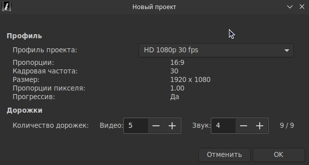
После открытия окна нового проекта можно выбрать следующие параметры: Профиль и Дорожки.
Профиль
В Профиле проекта определяется кадровая частота, размер и пропорции кадра и пикселя.
Видеоматериал автоматически подгоняется под размеры профиля, поэтому выбор профиля проекта с меньшими размерами, чем видеоролик, приведёт к снижению качества видео на выходе.
Для управления профилем проекта, через меню откройте Правка → Менеджер профилей. Здесь вы сможете скрыть неиспользуемые вами профили или отобразить их снова. Так же, сможете создать собственный профиль меняя значения в выбранном профиле.
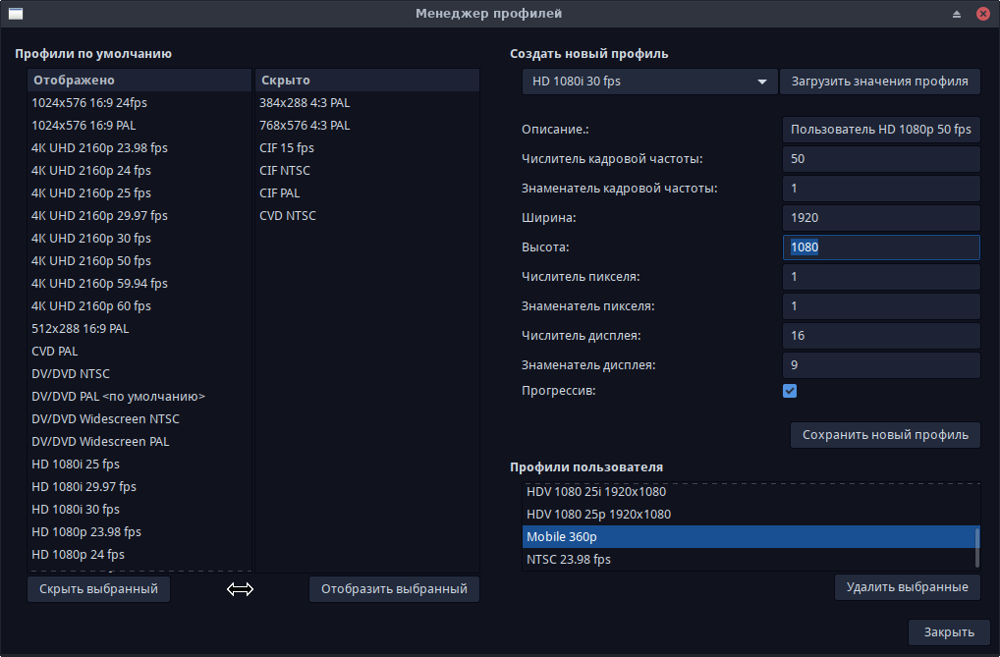
Для изменения текущего профиля зайдите в меню Проект → Изменить профиль проекта. Но изменить профиль проекта можно, только сохранив версию открытого профиля.
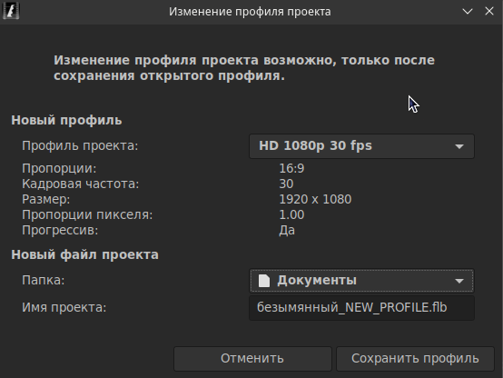
Чтобы нужный профиль загружался вместе с Flowblade, его можно выставить по умолчанию через меню Правка → Настройки Flowblade → Общие → Профиль по умолчанию.
Дорожки
Выберите количество видео и звуковых дорожек, которые будут использоваться в проекте. Всего дорожек может быть девять.
При необходимости, можно изменить количество дорожек с помощью меню Видеоряд → Изменить количество дорожек...
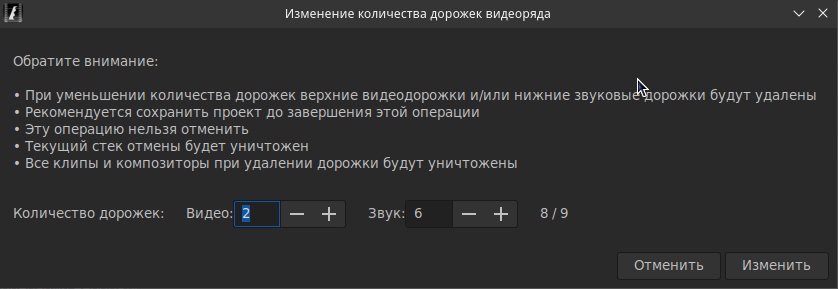
Но помните, что эта операция необратима, она уничтожит все клипы и композиторы на монтажном столе, которые не впишутся в созданную версию видеоряда и сотрёт историю ваших действий.
Видеоряд
Под понятием «Видеоряд» подразумевается всё, то что находится на монтажном столе (медиафайлы, эффекты, композиторы). Проект может содержать один или несколько видеорядов.
В сложных проектах, для создания и управления различными частями готового продукта, иногда лучше использовать несколько видеорядов.
Добавление новых видеорядов и их удаление
- С дополнительной панелью: Щёлкните правой кнопкой мыши в области «Видеоряд» и всплывающем меню выберите пункт Добавить новый видеоряд.
- Без дополнительной панели: Щёлкните правой кнопкой мыши во вкладке «Проект» в области «Видеоряд» и всплывающем меню выберите пункт Добавить новый видеоряд.
- Или в главном меню выберите Видеоряд → Добавить новый видеоряд.
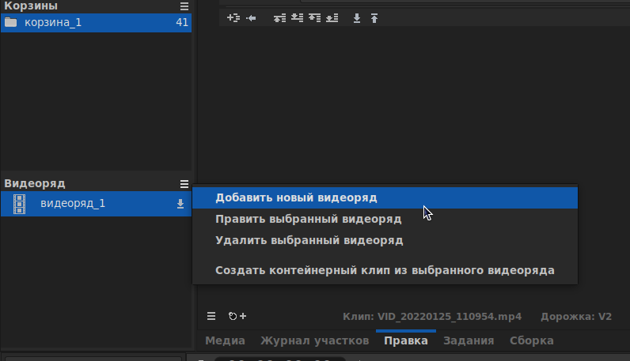
Удалить видеоряд можно через тоже меню, через которое его добавили. Например, Видеоряд → Удалить выбранный видеоряд.
При создании нового видеоряда вы можете выбрать количество дорожек.
Медиапроект: абсолютные и относительные пути
- Flowblade сохраняет ссылки на медиафайлы, используемые в проекте, как абсолютные пути.
- Если медиафайл не найден при загрузке, Flowblade попытается его найти по тому же имени во вложенных папках относительно бывшего его расположения.
- Так как, все медиафайлы, используемые проектом, сохраняются во вложенных папках относительно файла проекта, то, файл проекта и медиафайл можно перемещать вместе. Проект загрузится после копирования данных из другого места.
- Файлы собранные в проекте, к примеру, переходы сохраняются по умолчанию в скрытой папке: <Домашняя папка>/.local/share/flowblade/rendered_clips/.
- С помощью пункта меню Файл → Создать резервную копию... можно сохранить в одной папке: сам файл проекта, все активные медиафайлы и файлы собранные в проекте, так что, ваш проект всегда можно будет загрузить используя эти файлы.
- Сортировка поиска между абсолютными и относительными путями может быть установлена в окне Настройки Flowblade.
- Инструментом Перелинковщик медиа можно воспользоваться для устранения проблем с путями, которые могут возникнуть.
Работа с мультимедийными файлами
В видеоредакторе Flowblade файлы хранятся во вкладке Медиа. Слева в виде таблицы перечислены Корзины. Справа, в виде содержимого выбранной корзины расположены клипы.
Добавление мультимедийных файлов
- Во вкладке Медиа щёлкните правой кнопкой мыши и выберите пункт меню Добавить видео, музыку или изображения....
- Или в главном меню выберите Проект → Добавить видео, музыку или изображения….
- Далее с помощью диалогового окна выберите нужные медиафайлы. Во время выбора медиафайлов, можно использовать горячие клавиши Shift (для последовательного выбора) или Ctr (для произвольного выбора) в сочетании с левой кнопкой мыши.
- Файлы отобразятся в виде миниатюр.
- Обратите внимание, что создание миниатюр для добавленных медиа может занять некоторое время.
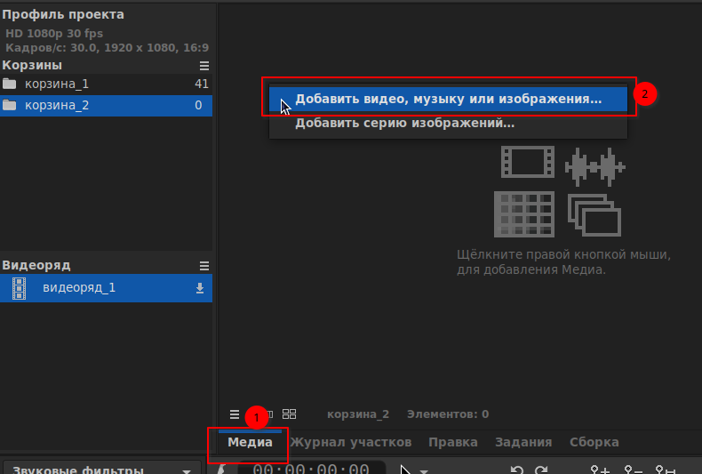
Работа с корзинами
Корзина — это место для хранения мультимедийных файлов.
Для простых проектов корзины обычно не требуются, и вы можете скрыть панель Корзины перетаскиванием ручки между панелями. Но если в вашем проекте несколько десятков, а может и сотен медиафайлов, для более удобной навигации, будет логичнее рассортировать их по корзинам.
Добавление корзины
- С дополнительной панелью: Щёлкните правой кнопкой мыши в области корзины и в всплывающем меню выберите Добавить корзину.
- Без дополнительной панели: Во вкладке Медиа щёлкните правой кнопкой мыши в области корзины и в всплывающем меню выберите Добавить корзину.
- Или в главном меню выберите Проект → Корзина → Добавить новую корзину.
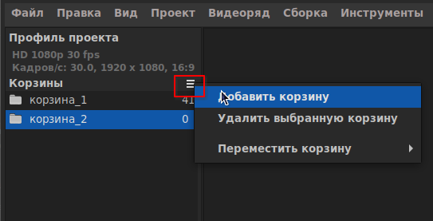
Перемещение файлов в другую корзину
- Перенесите содержимые файлы одной корзины на значок другой.
- Выберите файлы и во вкладке Медиа откройте гамбургер меню , выберите пункт Переместить выбранные клипы в корзину и выберите корзину назначения.
Прочие действия с корзиной
- Переименовать корзину можно щелчком по её имени (корзина_№).
- Изменить расположение корзины можно щелчком правой кнопкой мыши по корзине выбрав Переместить корзину → Выше, Ниже, Вверх или Вниз.
- Удалить корзину можно через тоже меню, через которое её добавили. Например, Проект → Корзина → Удалить выбранную корзину.
Использование монтажного стола
Прокрутка монтажного стола
- Осуществляется с помощью Ползунка монтажного стола
- Наведения курсора на монтажный стол и нажатием клавиши Ctrl + колёсико мыши.
Масштабирование монтажного стола
- Нажатием кнопки Увеличить
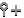
, Уменьшить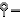
или В размер окна . - Прокруткой Колёсика мыши над монтажным столом.
Перемещение указателя воспроизведения
- Передвиньте курсор и нажмите Правой кнопки мыши в пустом месте на монтажном столе, указатель воспроизведения переместится вслед за курсором мыши.
- На линейке времени монтажного стола то же, что и на монтажном столе, только с нажатием Левой кнопки мыши.
- Передвиньте курсор с нажатием Любой кнопки мыши на линейке времени монитора.
- Нажмите на клавишу со стрелкой влево или на клавишу со стрелкой вправо, чтобы перейти к следующему или предыдущему кадру.
- Нажмите на клавишу со стрелкой вверх или на клавишу со стрелкой вниз, чтобы перейти к началу или концу участка клипа на верхней активной дорожке.
- Нажмите кнопку перемотки Вперёд или Назад в области кнопок монитора, чтобы перейти к следующему или предыдущему кадру.
Перемещение текущего кадра при просмотре клипа на мониторе
- Передвиньте курсор с нажатием Любой кнопки мыши на линейке времени монитора.
- Нажмите на клавишу со стрелкой влево или на клавишу со стрелкой вправо, чтобы перейти к следующему или предыдущему кадру.
- Нажмите на клавишу со стрелкой вверх или на клавишу со стрелкой вниз, чтобы перейти к началу или концу участка клипа на верхней активной дорожке.
- Нажмите кнопку перемотки Вперёд или Назад в области кнопок монитора, чтобы перейти к следующему или предыдущему кадру.
Переключение между показом монтажного стола и вкладки Медиа в мониторе
- Нажмите одну из кнопок монитора: Просмотр с Монтажного стола / из Медиа.
- Перенесите клип из медиа на Монитор, чтобы отобразить клип.
Дорожки
Активные дорожки
- В правом ряду области столбцов дорожек находятся Кнопки активности дорожек. Кнопка со стрелкой вниз указывает, что начиная с этой дорожки, дорожки расположенные ниже могут быть Активными дорожками.
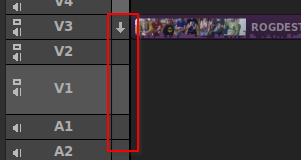
- Разрезаются клипы только на активных дорожках.
- Одна из операций вставки мультимедийного файла, отображаемого в настоящее время на мониторе Вставить клип, Склеить клип или Перезаписать клип разместит клип на верхней активной дорожке, обозначенной стрелкой.
Блокировка дорожки
Для предотвращения случайных изменений в дорожку, можно запретить в ней редактирование заблокировав её.
- Чтобы заблокировать дорожку, щёлкните Правой кнопкой мыши в области столбцов дорожек и выберите Заблокировать дорожку. Значок с замком указывает на то, что дорожка заблокирована и внести в неё изменения не получится.
- Чтобы разблокировать дорожку, щёлкните Правой кнопкой мыши в области столбцов дорожек по заблокированной дорожке и выберите Разблокировать дорожку. Значок с замком исчезнет, можно снова вносить изменения в дорожку.
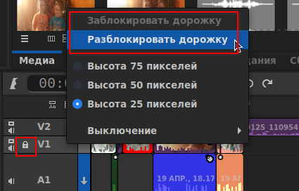
Выбор клипов
Выбор одного клипа
- Щёлкните по клипу Левой кнопкой мыши.
Выбор нескольких клипов
- Щёлкните по клипу Левой кнопкой мыши.
- Щёлкните по другому клипу на той же дорожке Левой кнопкой мыши, зажав клавишу Ctrl.
- Будут выделены все клипы между выбранными.
Отмена выбора
- Щёлкните в пустом месте монтажного стола.
Добавление клипов в видеоряд
Из вкладки Медиа
- Переместите ваш клип из вкладки Медиа на нужную видеодорожку.
- Если во время перемещения в качестве предпочтительного действия (подробнее: Настройка поведения монтажного стола) выбран параметр Перезаписать пробелы, кроме дорожки V1:
- И вы переместили клип на дорожку V1, то он расположится вначале дорожки, или сразу за последним размещённым клипом.
- Перемещение клипов на все дорожки, кроме V1:
- Клип будет вставлен, даже если он попал на уже размещённый клип.
- Перемещаемый клип перезапишет, как доступное пустое пространство, так и определённое количество кадров, уже размещённого на монтажном столе клипа.
- Если во время перемещения в качестве предпочтительного действия выбран параметр Не перезаписывать пробелы»:
- Клип будет расположен, в начале дорожки, или сразу за последним размещённым клипом.
Из монитора
- Откройте клип в мониторе:
- двойным щелчком по миниатюре клипа во вкладке Медиа;
- перемещением клипа на монитор;
- щелчком Правой кнопкой мыши по клипу выберите пункт Открыть клип в мониторе.
- Определите участок вставки:
- Для определения участка используйте кнопки Выбрать начало участка(I) и Выбрать конец участка(O).
- Если участок не определён, клип вставится полностью.
- Воспользуйтесь одним из методов вставки Склеить клип(U), Вставить клип(Y) или Перезаписать клип(T).
- Клип будет вставлен на верхнюю активную дорожку (отмечена стрелкой вниз).
Редактирование клипов на монтажном столе
После добавления клипов на монтажный стол, для формирования видеоряда, вам, могут понадобится инструменты для работы с ними.
Для обрезки клипов
Воспользуйтесь инструментами Обрезка, Прокрутка, Скольжение и Мультиобрезка.
Для перемещения клипов
Воспользуйтесь инструментами Вставка, Перемещение, Распорка и Коробка.
Резка клипов
- Выберете кадр для разрезания
- Установив указатель воспроизведения на том кадре, на котором должен быть разрезан клип.
- Разрежьте клип
- На активных дорожках нажатием на кнопку Разрезать клип или клавишу X на клавиатуре,
- На всех дорожках сочетанием горячих клавиш Shift + X,
- Чтобы разрезать выбранный клип воспользуйтесь инструментом Резка.
Удаление клипов
Удаление со вставкой: выберите клип(ы) и нажмите клавишу Delete или используйте кнопку Удалить со вставкой. Все клипы на дорожке после удалённых клипов переместятся влево перекрывая созданный пробел, синхронизация с другими дорожками нарушится.
Удаление без вставки: выберите клип(ы) и нажмите кнопку Удалить без вставки на панели редактирования. Клип заменяется на пробел, другие клипы на дорожке не перемещаются, синхронизация с другими дорожками сохранится.
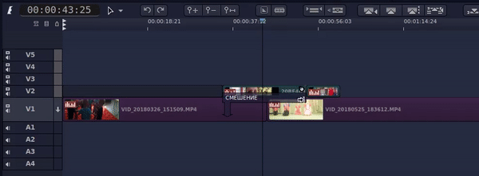
Удаление со сдвигом: похоже на Удаление со вставкой, но перемещение клипов выполняется на всех дорожках для сохранения синхронизации. Выберите клип(ы) и нажмите кнопку Удалить со сдвигом на панели редактирования. Все клипы на всех дорожках переместятся влево перекрывая образовавшиеся пробелы. Если перемещение клипов влево может привести к перезаписи на монтажном столе, удаления не произойдёт.
Удаление участка: определите участок отметив его начало и конец на монтажном столе и на панели редактирования нажмите на кнопку Удалить участок. Удалятся все элементы монтажного стола в пределах определённого вами участка, а оставшиеся за ним переместятся влево, заполняя образовавшиеся пробелы.
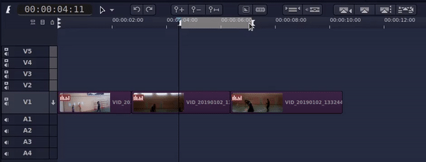
Используйте горячие клавиши! Гораздо быстрее нажать на клавишу X, для разрезания клипов или на клавишу Delete для их удаления, чем пользоваться кнопками на панели редактирования, для тех же операций.
Переходы
Переходы определяют, как один участок клипа будет переходить к другому.
В Flowblade переходы делятся на три типа:
- Первый тип «Наплыв» — второй клип плавно вытесняет первый.
- Второй тип «Вытеснение» — второй клип вытесняет первый с помощью выбранного шаблона вытеснения (файла каше, маски), например при выборе шаблона «Круг наружу» второй клип будет постепенно возрастать из первого в виде круга пока не заполнит весь монитор.
- Третий тип «Смена цветом» — первый клип уйдёт в выбранный цвет, а второй из этого цвета выйдет.
Добавление перехода между клипами
- Выберите два соседних участка клипа и нажмите на значок перехода на панели редактирования.
- Выберите тип перехода, «Наплыв», «Вытеснение» или «Смена цветом» и его длительность.
- При выборе перехода «Вытеснение» выберите «Шаблон вытеснения». При выборе перехода «Смена цветом» выберите цвет перехода.
- Если в информации о перекрытии сумма доступных для перехода кадров первого и второго клипа совпадает или больше длительности самого перехода выберите параметры кодирования для сборки перехода (во избежании потери качества, желательно, чтобы они соответствовали параметрам проекта) и нажмите кнопку Применить.
Удаление перехода
Выберете клип перехода и нажмите клавишу Delete для его удаления. Если в клипах до и после удалённого перехода есть извлечённые кадры, то пробел, оставленный удалённым переходом, перекроется путём их использования. При отсутствии извлечённых кадров, второй клип приклеится к первому.
Сборка фильма
Выбор параметров
- Во вкладке Сборка выберите папку для размещения будущего фильма.
- Присвойте Имя выходному файлу, если это нужно.
- Для выбора типа файла выберите Формат кодирования в который нужно собрать ваш фильм и Качество сборки.
- Нажмите кнопку Сборка для запуска процесса сборки.
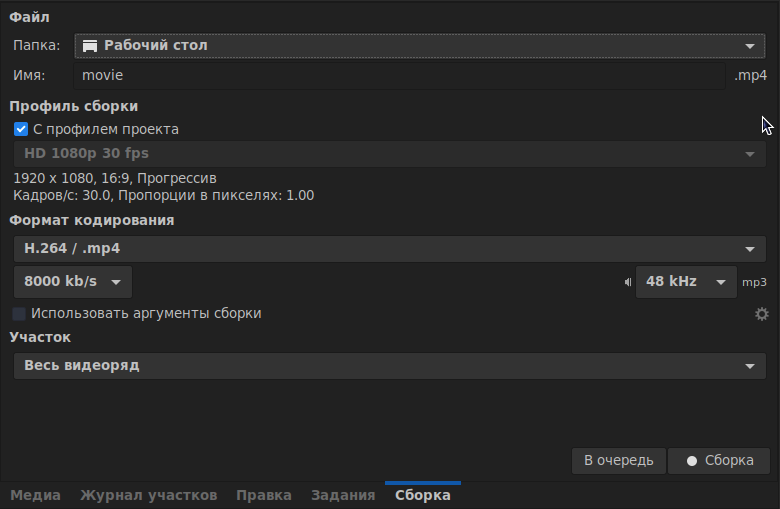
Отображение результатов
- Откроется окно процесса сборки, которое отображает информацию о пути собираемого файла и предполагаемом времени сборки.
- После завершения сборки окно процесса сборки закроется автоматически.